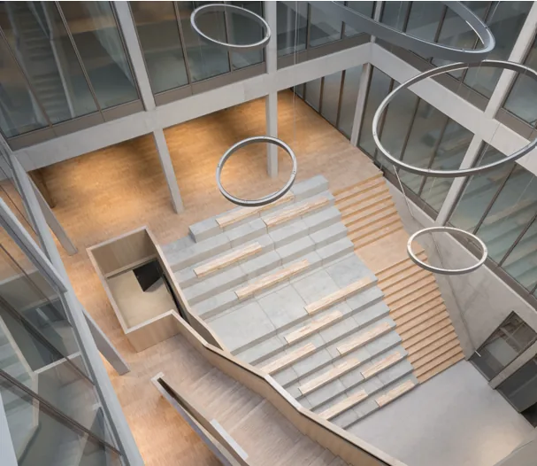

Planungsbüro für Umbau in Berlin
Sinke Planung plant Umbau, Sanierung, Anbau und Neubau vom ersten Entwurf bis zur Baustelle: mit über 20 Jahren Erfahrung und einem festen Ansprechpartner.

Leistungen für Wohnung, Haus und Gewerbe
- Umbau & Sanierung
Modernisierung, neue Grundrisse, energetische Sanierung.
- Anbau, Aufstockung & Dachausbau
Mehr Wohnraum am bestehenden Haus.
- Innenausbau & Umnutzung
Raumkonzept für Wohnung, Praxis und Gewerbe.
- Neubau
Vom Einfamilienhaus bis zum Mehrfamilienhaus.


Erfahrung
Über 20 Jahre Erfahrung in Architektur und Planung: In leitender Rolle haben wir in Berlin mehr als 2.000 Wohneinheiten sowie Schulen und Gewerbebauten verantwortet. Heute planen wir Umbau, Sanierung und Anbau, und Sie sprechen direkt mit der Person, die plant.
Referenzen aus Wohnungsbau, Sanierung und Gewerbe
Projekte aus unserer bisherigen Tätigkeit, teils in leitender Rolle in vorherigen Büros verantwortet. Alle sieben Projekte ansehen


Ein Projekt in fünf Schritten
- 1. Erstgespräch und Idee
Vorhaben klären, Bestand ansehen.
- 2. Entwurf und Grundriss
Entwurf, Grundriss, erste Kostengrößen.
- 3. Genehmigungsplanung
Bauantrag mit unseren Partner:innen.
- 4. Ausführungsplanung
Details, Maße und Materialien.
- 5. Begleitung der Umsetzung
Qualität und Termine auf der Baustelle.

Fragen zur Planung in Berlin
Vier Antworten zu Leistungen, Bauantrag, Kosten und Bezirken.

Was macht Sinke Planung?
Sinke Planung ist ein Planungsbüro in Berlin. Wir übernehmen die architektonische Planung Ihres Bauvorhabens: vom ersten Entwurf über den Grundriss bis zur Begleitung der Umsetzung. Schwerpunkte sind Umbau und Sanierung, Anbau, Aufstockung und Dachausbau, Innenausbau und Umnutzung sowie Neubau.
Übernehmen Sie auch den Bauantrag?
Wir planen Ihr Vorhaben und begleiten es bis zur Umsetzung. Die Genehmigungsplanung erstellen wir gemeinsam mit bauvorlageberechtigten Partner:innen aus unserem Netzwerk, die den Bauantrag bei der Berliner Bauaufsicht einreichen. Für Sie bleibt es bei einem Ansprechpartner.
Was kostet die Planung?
Das Honorar richtet sich nach Art, Größe und Schwierigkeit des Vorhabens und danach, welche Leistungsphasen Sie beauftragen. Als Orientierung dient die Honorarordnung für Architekten und Ingenieure (HOAI). Ein Angebot für Ihr Vorhaben erstellen wir auf Anfrage.
In welchen Berliner Bezirken planen Sie?
Wir planen in ganz Berlin, unter anderem in Prenzlauer Berg, Charlottenburg, Zehlendorf und Mitte.
Projekt anfragen
Schildern Sie kurz Ihr Vorhaben: Standort, Größenordnung und geplanter Zeitrahmen. Für die erste Einschätzung reichen wenige Sätze.
Erreichbar Montag bis Freitag, 9 bis 18 Uhr.